| z, ? | toggle help (this) |
| space, → | next slide |
| shift-space, ← | previous slide |
| d | toggle debug mode |
| ## <ret> | go to slide # |
| c, t | table of contents (vi) |
| f | toggle footer |
| g | toggle follow |
| r | reload slides |
| n | toggle notes |
| p | run preshow |
| P | toggle pause |
| s | choose style |
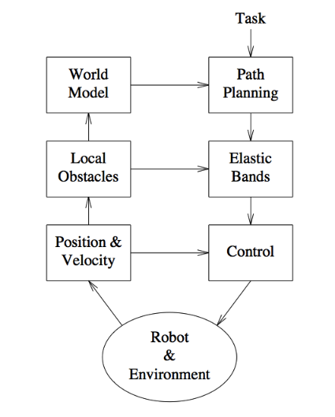
You can view one of the forms of oscillation common to potential fields here.
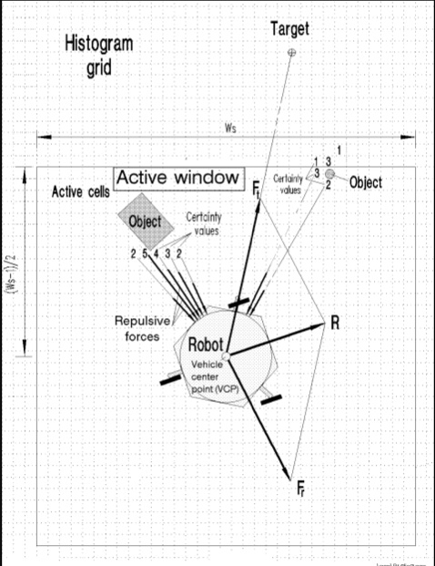
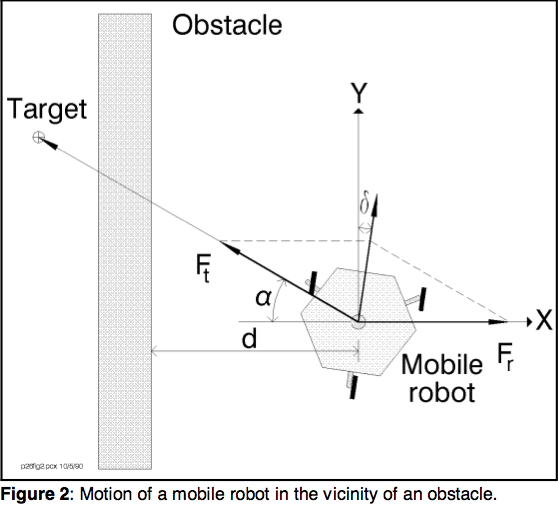
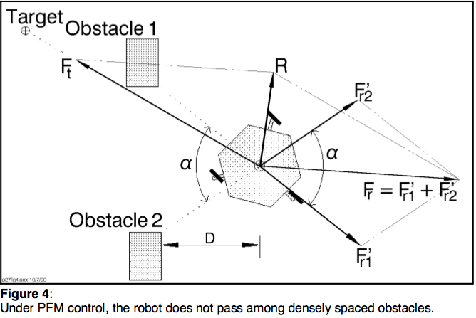
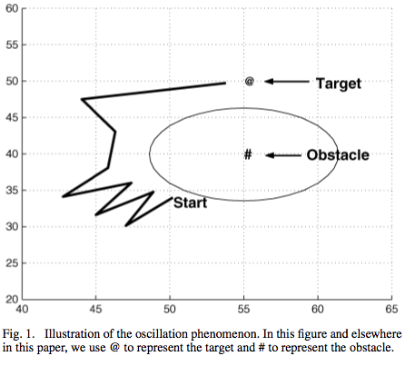
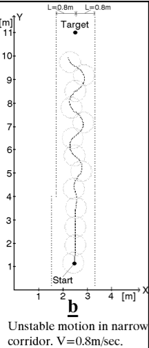
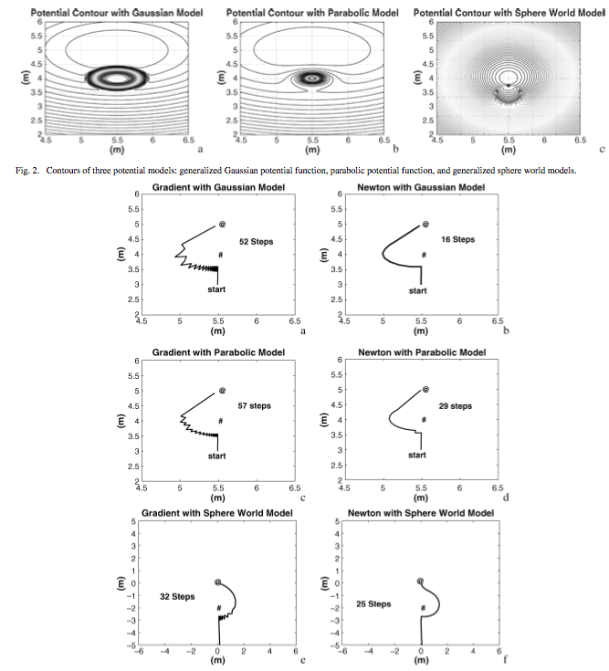
The intention of the elastic bands method
is to maintain a deformable collision-free path to the goal at all times.
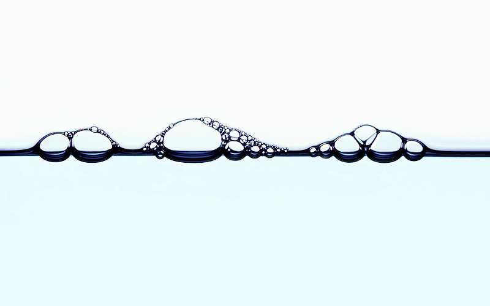
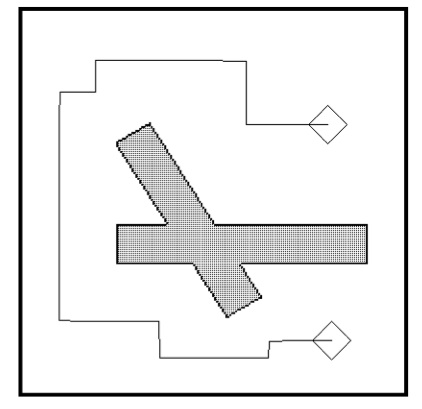
Like a typical A* plan the corners are sharp and not optimal at the control-level, but doesn't matter.
IN order to achieve this...
We have now converted the global plan to an elastic band.
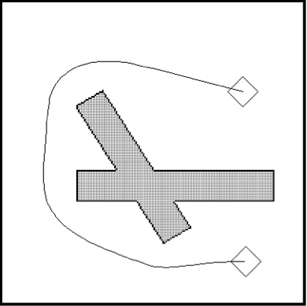
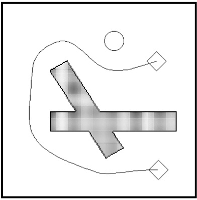
"The bubble concept offers an efficient method of
maintaining a collision-free path even in high
dimensional c-spaces. Instead of trying to compute
and represent the entire free space, we use a model
of an environment and robot to generate, on the fly,
local subsets of the free space. Each subset, called
a bubble, is computed by examining the local freedom
of the robot at a given configuration."
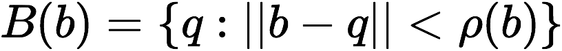
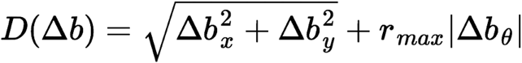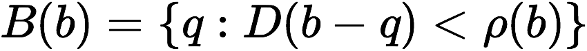
Obviously, bubbles are a coarse representation of the free space around the robot. There’s a possibility of using ellipses or other shapes, but this increases the complexity of bubble computation. Essentially, not explored.